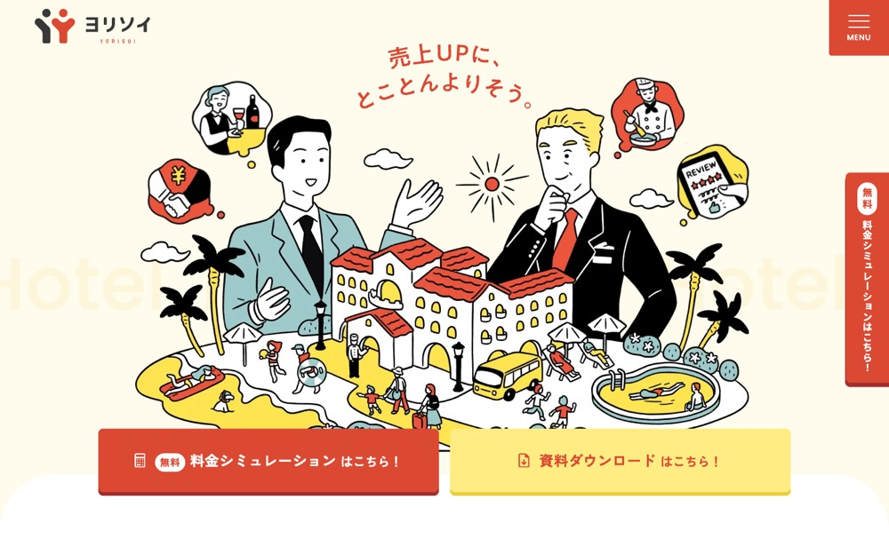

ヨリソイ
#fffbed の地に #d94933 を大きな面で置く配色。影を使って浮かせる。本文 16px・行間 1.75、セクション間 76px。
配色
文字色は #3d3535 / #db4933 / #fdf6da / #ffffff。
どこに使っているか（箇所数）
| 色 | 面 | 文字 | 枠線 | ボタンの地 |
|---|---|---|---|---|
#fffbed |
26 | 0 | 1 | 5 |
#ffffff |
97 | 33 | 4 | 3 |
#db4933 |
25 | 86 | 5 | 2 |
#fdf6da |
5 | 12 | 7 | 2 |
#e7f2f3 |
1 | 0 | 0 | 0 |
#3d3535 |
0 | 159 | 0 | 0 |
#d94933 は
文字
和文
Noto Sans JP欧文
Poppins本文
16px / 行間 1.75この見本は Noto Sans JP で表示していますあのイーハトーヴォのすきとおった風
あのイーハトーヴォのすきとおった風
あのイーハトーヴォのすきとおった風
あのイーハトーヴォのすきとおった風
あのイーハトーヴォのすきとおった風
あのイーハトーヴォのすきとおった風
余白とかたち
| コンテンツ幅 | 1120px | |
|---|---|---|
| 読ませる段の幅 | 584px | |
| セクションの上下余白 | 76px | |
| 並びの間隔 | 8 / 13 / 16 / 56px | |
| 角丸 | 7px（大きな面は 0px） | |
| 影 | rgb(162, 46, 46) 0px 6px 0px 0px | |
| 画面幅の切り替え | 1599 / 1299 / 1023 / 767 / 567px |
ボタン
お問い合わせ
transparent / 16px / 400 / 角丸 0px
もっと見る
transparent / 14px / 500 / 角丸 7px
もっと見る
transparent / 19px / 700 / 角丸 0px
ページの組み立て
上から順に、実際に並んでいたセクション。高さの比率もそのまま。
1
ヒーロー（画像）
860px ・ #fffbed
2
3カラム・画像あり
640px ・ #ffffff
3
5カラム・画像あり
920px
4
5カラム・画像あり
4560px ・ #fffbed
5
6カラム・画像あり
1120px
6
2カラム・画像あり
700px ・ #fffbed
7
1カラム・画像あり
2580px ・ #fffbed
8
5カラム・画像あり
1020px ・ #fffbed
9
2カラム・画像あり
640px ・ #db4933
10
6カラム・画像あり
1960px
11
4カラム・画像あり
1460px
12
4カラム・画像あり
980px ・ #fffbed
13
1カラム・文字だけ
340px
全13セクション。
面と、その上に置く線・文字
| 面 | 使用箇所 | 線と文字 |
|---|---|---|
#ffffff |
42 | #d94933 |
#fffbed |
9 | #d94933 |
#db4933 |
5 | #db4933 |
#fdf6da |
3 | #d94933 |
線と文字の色は固定ではなく、乗っている面で入れ替える。
部品
同じ形が 7 箇所。角丸 37px ／ 影なし
角丸は 7px だが、完全な円は別扱いで 47 箇所（40px×30、48px×16、64px×1）。角を丸めないことと、円のモチーフは両立する。
タグ
角丸 7px ／ 14px
PCとスマホ
同じサイトを390px幅で測り直した値。
| PC 1440px | スマホ 390px | |
| 本文 | 16px / 行間 1.75 | 14px / 行間 1.75 |
| 見出し | 30px | 20px |
| セクションの上下余白 | 76px | 40px |
| 左右の余白 | — | 20px |
| 並びの間隔 | 16px | 14px |
文字サイズの段は 20 / 18 / 16 / 14 / 12px。セクション余白はPCの53%まで詰める。
画像
3:4・14枚
3:2・14枚
1:1・12枚
63枚。角丸 0px。